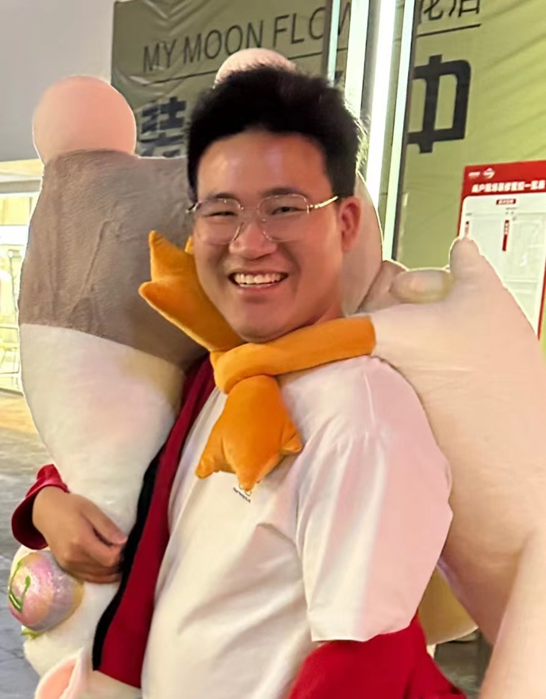

|  |
Currently, I am a research engineer affiliated with Shanghai Ark NLP (Shark NLP), Shanghai AI Lab. Previously, I worked as a researcher at Bytedance AI Lab. I also interned at Google AI China Center. I spent seven years at Fudan University pursuing my bachelor and master degrees, under the supervision by Prof. Xiaoqing Zheng. My research focuses on text generation and generative models. Currently, I feel interested in (large) language models on their backbone architectures, pretraining and instruction tuning. Welcome to have a chat! Email: fengjiangtao@pjlab.org.cn, fengjt16@fudan.edu.cn |
Softwares
-
OpenICL
: an open-source framework to facilitate research, development, and prototyping of in-context learning..
-
ParaGen
: a PyTorch deep learning framework for parallel sequence generation and beyond.
Research Highlights (Google Scholar)
-
Long-Range Language Modeling
- In-Context Learning with Many Demonstration Examples, arXiv:2302.04931
- CAB: Comprehensive Attention Benchmarking on Long Sequence Modeling, arXiv:2210.07661
-
Text generation & neural machine translation
- CoNT: Contrastive Neural Text Generation, NeurIPS 2022 (Spotlight)
- The Volctrans GLAT System: Non-autoregressive Translation Meets WMT21, WMT 2021 (De-En champion)
-
Generative models for sequence modeling
- DiffuSeq: Sequence to Sequence Text Generation with Diffusion Models, ICLR 2023
- Neural Phrase-to-Phrase Machine Translation, arXiv:1811.02172
-
Contextualized word representation learning
- Geometric Relationship between Word and Context Representations, AAAI 2018 (Oral)
- Learning Context-Specific Word/Character Embeddings, AAAI 2017
Prizes & Awards
- Outstanding Graduate in Shanghai, 2019
- China National Scholarship, 2016-2017 & 2017-2018
- Outstanding Undergraduation Thesis of Software School in Fudan University, 2016
- 1st Prize in 2014 National Undergraduate Mathematical Contest in Modeling, 2014
- 1st Prize in 2013 Shanghai Undergraduate Mathematical Contest, 2013